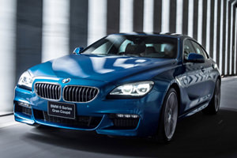

經過了長時間的飛行，我從台灣橫跨了太平洋，經過舊金山轉機來到位於南加州的棕櫚泉。最後一段的飛行特別辛苦，單走道的50人座飛機很難和舒適連在一塊，時差加上前一段12個小時飛行累積的疲勞，已經是中年大叔體能的極限。
但就在我坐上前來接機的BMW廠方人員所準備的740Li，到機場到飯店的20分鐘車程中，突然有一種身心獲得短暫舒緩的安頓感。這是BMW 7 Series身為品牌頂級車系，理應當展現出的水準。740Li我們很熟悉了，最大326匹馬力，提供從容而有餘裕的動力。要是在同樣的車室奢華水準下，動力一舉再提升近一倍，至超級跑車等級的610匹馬力呢？太貪心了吧。
公路上移動的頭等艙
或許是金字塔頂端買家，才有權利如此任性地要求車廠，為他們打造出這樣一款兼具二種完全不同性格的產品。在公路上，BMW M760Li是一部頂級奢華的旗艦車款。在賽道上，M760Li所擁有的力量，則足以表現出凌駕群雄的性能，是BMW品牌當中，性能的王者。一進入M760Li座艙，不論是前座亦或是後座，你一定可以在第一時間感受到這款車的不凡。
內裝的佈局雖然與尋常的7 Series類似，但M760Li除了採用更頂級材質鋪成，後座採左右獨立座椅的設定，區隔出富豪人士在長途飛行中所熟悉的頭等艙空間。
長條菱格交錯的椅面與中央扶手與車側扶手，採用Nappa真皮包覆，高亮澤黑色橡木木紋飾板、後排的長毛絨腳墊，及深灰色 Alcantara 面料的車頂蓬，營造出奢華的車內氛圍。
四座獨立座位並非M760Li唯一的佈局，引進國內販售的M760Li，標準配置為4+1座椅，以方便後座乘客都能從同一側門進出。此外，更將Individual Merino真皮材質列為標準配備，飾板亦採用Individual鋼琴烤漆，及Individual麂皮車內頂蓬，奢華程度更為上乘，因此M760Li國內販售的車名之後均冠上了Individual名號。
底盤與操控系統
如何讓一台車兼具舒適與性能兩種性格？BMW M760Li建構在Executive Drive Pro底盤系統上，只要透過動態行車模式的切換，車主便可以快速轉換性格。
BMW導入動態行車模式切換做為駕駛介面的一部分，已有一段時日。M760Li共有Sport、Sport Individual、Comfort、Comfort+、ECO PRO、ECO PRO Individual、Adaptive等模式。每一種模式均可對應不同的引擎輸出、變速箱邏輯及懸吊特性。
進入G11/G12世代的7 Serires，首度導入了具備後輪轉向功能的Integral整合式主動轉向系統。一般的7 Series列為選配，M760Li則為標準配備。
轉向特性偏向後驅的xDrive四輪傳動底盤，搭配後輪轉向的輔助，在不同速度下，與轉向輪同向或反向的方式，增加過彎的靈活度。
有了後輪轉向的加持，在彎道中，M760Li靈活的轉向特性，有時會讓你忘了正在駕駛的是一部車長超過5.2米的大型豪華房車。只有在入彎急剎時，巨大的質量慣性才會略為提醒你，M760Li是臺車重幾達2.2噸的龐然大物。
Executive Drive Pro是一具主動式氣壓懸吊繫統，即便不是為了激烈操控，在彎道中或是崎嶇路面行駛時，透過電腦控制與機械作動的結合，減少左右擺盪來維持前後軸的水平，減震並增加震動的舒適性。
0到100彈射起步
過去，當測試車輛性能時，實測的加速數據與廠方宣稱有段落差時，我們總是懷疑起自己的駕駛技巧是否不夠精進。而近來越來越多車款搭載Launch Control功能後，實測0-100加速變得容易許多。
Launch Control，簡單來說就是彈射起跑的功能，一般來說不太可能出現在一輛車身超過5.2米的豪華旗艦身上。不過，M760Li卻具備了這項功能。
如何開啟Launch Control？M760Li確實讓人有點摸不著頭緒，它不像法拉利就直接設計在中控台下方那十分顯眼的位置，需要通過稍為有點複雜的操作方能進入。
在原廠教練的提示下，將行駛模式切入Sport模式，DTC動態循跡控制切入Off，排檔桿撥入Ds，左腳踩住剎車，右腳大腳踏下油門。如果以上步驟都做對了，儀錶板的正下方將亮起方格旗的圖案與Launch Control active字樣。
這時候，你只要放開左腳煞車，握緊方向盤，右腳繼續死命地踩住油門，然後，就結束了。
原本以為是架在彈弓上被彈射而出的感覺，但或許M760Li座椅實在太舒適了，感覺就是一段比起尋常更為快速的大腳油門加速。
我認為少有人會去意識到3.7秒破百的時刻，因為對於M760Li而言，時速100公里並非是抵達，而是直接劃過的瞬間。
不只直線加速快，DTM冠軍車手領跑賽道
此行來到美國之前，我一直疑惑這一款性能強悍的車款，為何要選在美國舉辦全球試駕活動。
畢竟德國有Autobahn高速公路，在無速限的路段，我們就可以油門踩到底，讓強化版的V12引擎全力輸出，測試BMW旗下唯一時速表刻度330km/h的M760 Li，指針貼在表底時的暢快淋漓。
但是在美國？雖然試車地點在沙漠中所蓋起來的城市Palm Spring棕櫚泉，附近的道路品質良好，車流也算稀少，但是擔心像影集中從天而降的警用直升機，總讓試車的一行人油門踩底的瞬間，立刻放鬆不少，汽車媒體血液中對於速度的那股激情一直無從宣洩。
還好，BMW的導航，帶我們來到BMW的賽車體驗中心，讓著德國DTM的車手，可以帶著媒體在賽道上盡情狂飆，讓熱血盡情的沸騰，壓抑一整天的激情可以全力衝刺。
在賽道上，有著專業的房車賽車手在前領跑，讓我們可以很快的上手，照著他所駕駛的最佳路線、煞車點與進彎點，很清楚能感受到M760 Li強勁的性能。
在V12引擎的強力推動之下，M760 Li在直線的加速十分迅捷，一點都不遜於小車的輕快。但是在進彎出彎之際，雖然有著卓越的底盤調校，讓我們可以高速維持在良好的路線上，但是仍能感受到M760 Li與小車不同的重量級身軀。
DTM冠軍車手的速度，自然不同凡響，讓我們都能盡情的享受，讓熱血得以發揮。但過多的腎上腺素，即便冷氣超強，座椅通風也切至最強，身體仍然感覺到燥熱。
但是正在DTM車手帶領的極限上行駛，若是稍稍分心或是煞車點稍有差池，果然路線立刻就跑開了，而在距離拉開、路線又失誤之後，再要追近DTM車手，已經比原有的跟隨，難上了許多。
有了職業車手的領跑，讓我們不需要經過摸索，就直接進入了M760Li的極限狀態。V12引擎如同有12個拳頭般的武師，在高轉速狀態下快速出拳，痛擊對手。
在BMW Performance Center賽道上，M760Li就像一位身懷絕技的武林高手，遇上實力相當的高手，使出畢生絕學，來一場驚天動地的對決。
突然，我有一種頓悟。在尋常的道路上巡弋，M760Li的強悍性能並非無用武之地。就像是擁有頂級武藝的高手，也不必隨時都要和人拚個你死我活。這讓我想起電影「葉問」的畫面，葉師父遇上尋常的對手時，不必使出全力，從容地以一打十。
餘裕，原來也是一種風情。


-

舒適、又紓壓－BMW MPA性能車款 M550i xDrive試駕體驗
BMW向來就是駕駛樂趣的製造者，就像這次試駕的M550i xDrive，它不像M家族車款那樣隨時處在戰鬥狀態，卻又比一般的BMW擁有更多跑車性格，要快、要慢，完全操之在你，這就是「MPA」的迷人魅力！
-

性能與舒適的均衡點─BMW M Performance Automobiles高性能車款
BMW M Cars，是性能迷眼中不可多得的尤物，不過，少了一點日常代步的實用性。有鑑於此，BMW增加一條兼顧高性能與日常實用性的產品線，於是在2012年正式成立M Performance Automobiles，第一款車就是M135i。
-

BMW 640i Gran Coupé M Sport限量版上市
BMW臺灣總代理汎德汽車，選擇在2017年5月8日透過新聞稿方式宣布，搭載M Sport運動化套件的640i Gran Coupé...
-

風聲走漏，新一代BMW M5馬力突破600匹、改搭8速自排？
根據外媒流出的消息顯示，底盤代號F90的新一代BMW M5，將沿用F10 M5的動力單元，最大馬力有望突破600匹...
-

把手放開，你得到的是一切─BMW 530i M Sport試駕
「把手放開，你得到的是一切」這句話，出自電影《臥虎藏龍》。2016年適逢BMW的100歲大壽，隨著BMW一路演進至G世代...
-

輕功了得─BMW 530i M Sport試駕，動力操控篇
身為車壇龍頭大老的BMW，對於「練輕功」有著相當深入的刻劃，不僅僅是針對M Power性能部隊、抑或是MPA車型，乃至於一般車型在面臨世代更迭...
©2017 MediaBrilliance System Corporation. All Rights Reserved.